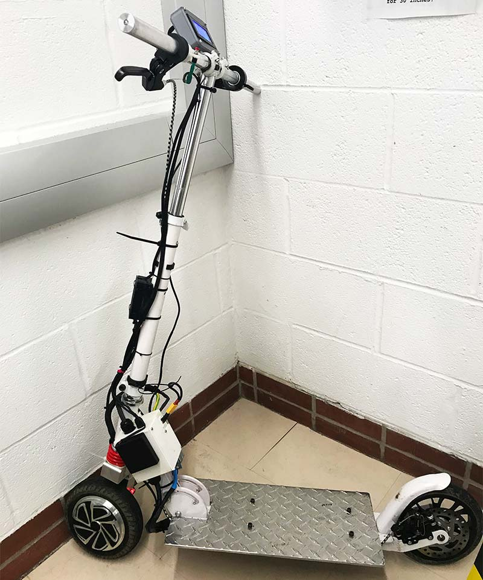

Final Project Ideas
-
Creating a Japanese Otamatone Musical Instrument
In regarding to the Otamatone project, some of the critical components that I would have to get is the actual frame of the instrument, the synthesizer board that can convert a resistor signal from a soft potentiometer into an audio signal.

-
Creating an Electric Scooter from Scratch
A much more complicated project which requires one primary component, a motor wheel. From the motor wheel other components become easier to acquire, such as the building the actual aluminum structre of the scooter, and then an ebike controller which can then handle the signal between braking, and speed control.
